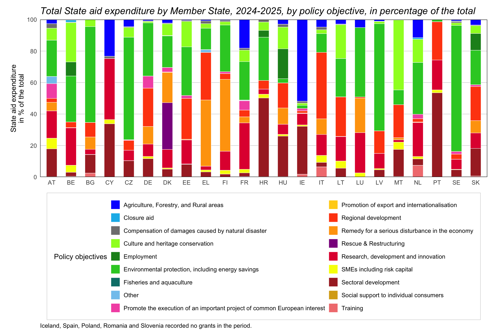
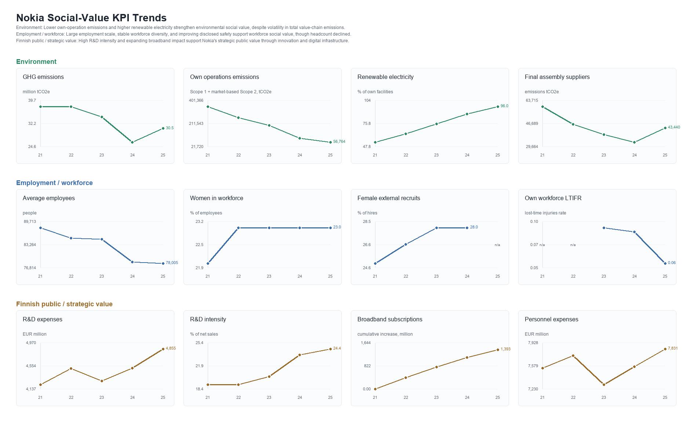
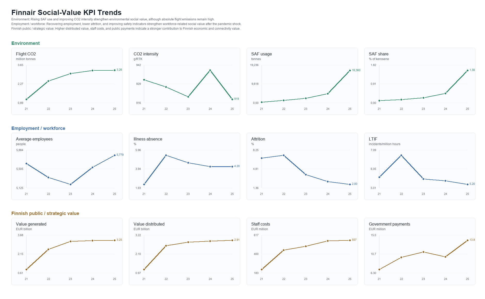
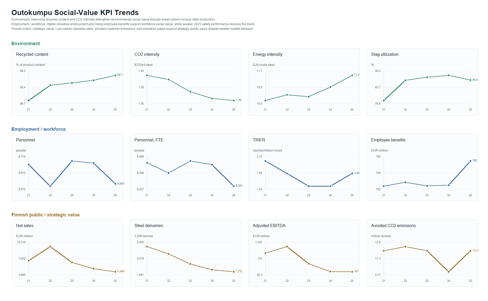
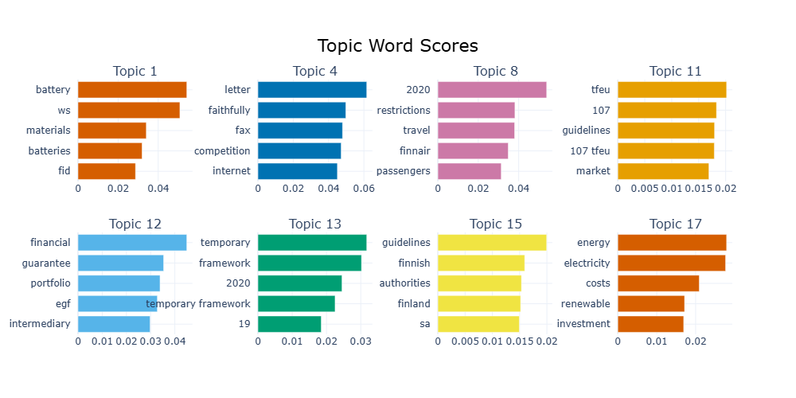
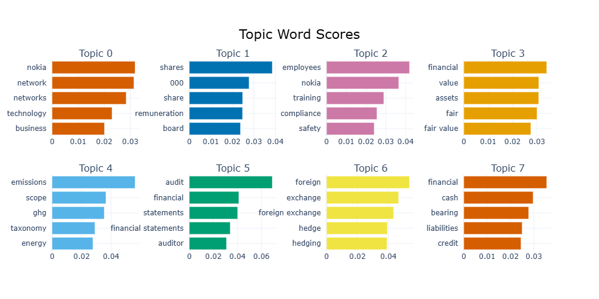
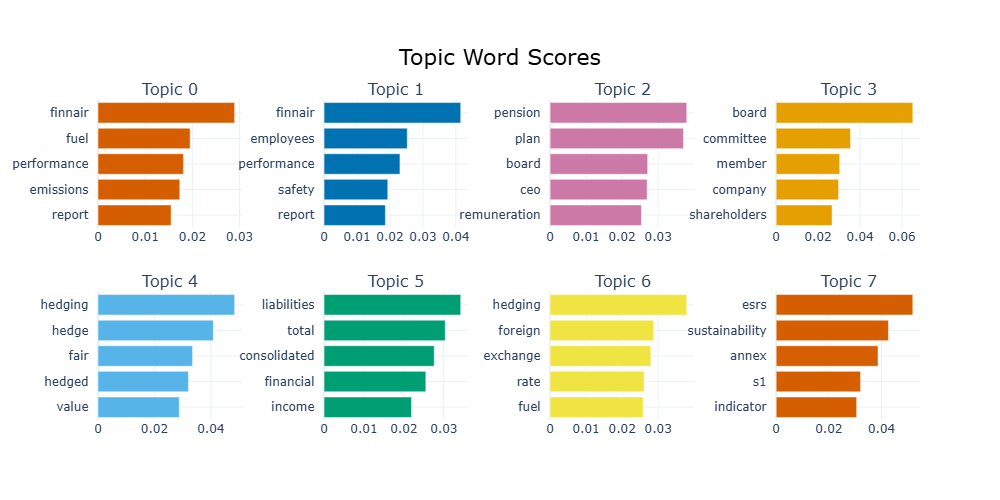
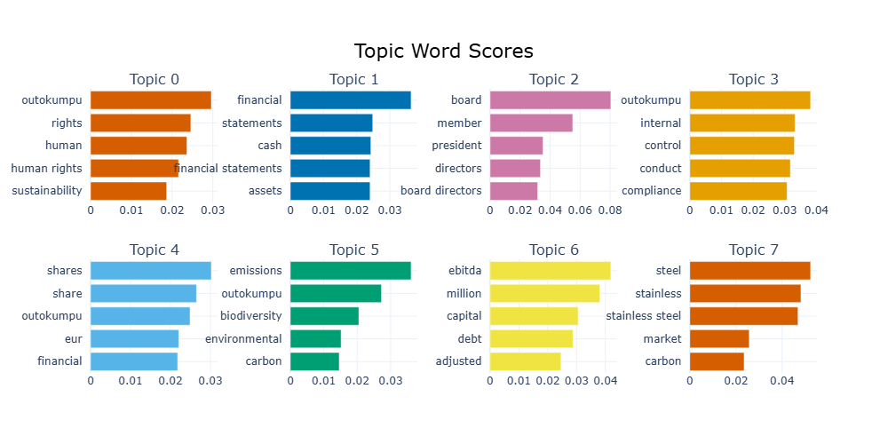
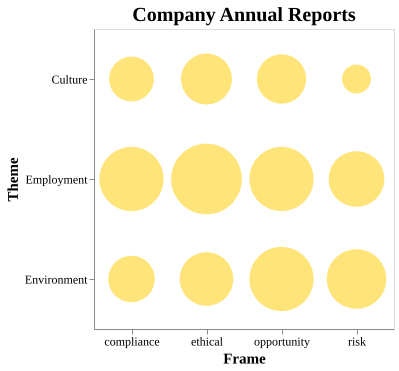
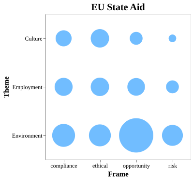

Quantitative signals
State-aid and company KPI plots show how measurable support and reporting change over time.
Poster supplement
How is Social Value of Businesses Communicated?
Supplemental visual evidence for a poster project comparing how social value appears in EU state-aid data, Finnish company reporting, and language-based analysis.
Project highlight
The poster introduces the core argument about social value in Finland. This page keeps the supporting plots together: numerical trends, collocation patterns, topic-model evidence, and a method visualization for the retrieval-augmented generation technique.
State-aid and company KPI plots show how measurable support and reporting change over time.
Collocation and topic models compare social-value framing across policy and corporate texts.
The embedded method view shows how evidence moves from documents into analysis.
Quantitative analysis
Drawing on EU State aid expenditure data disaggregated by Member State and policy objective, this research proposes an initial conceptualisation of social value framing and examines its associated thematic dimensions.


Company-level indicators for comparing social-value reporting against the wider Finnish context.

Company-level indicators for comparing aviation-sector reporting with public-support evidence.

Company-level indicators for reading industrial reporting alongside social-value themes.
Linguistic analysis
All topic-modeling outputs are grouped here so state-aid evidence and company-specific close readings can be compared in one space.

State aid
Topic clusters from state-aid texts provide the policy-side language baseline.

Nokia
Company-specific topics support the close reading of Nokia reporting.

Finnair
Company-specific topics support the close reading of Finnair reporting.

Outokumpu
Company-specific topics support the close reading of Outokumpu reporting.
Linguistic analysis
The collocation views compare how social-value themes cluster with frames such as compliance, ethics, opportunity, and risk.

Company reports
Collocations in company reports show which social-value themes are associated with compliance, ethics, opportunity, and risk.

State aid cases
Collocations in state-aid cases show how public-support language organizes social-value themes and risk framing.
Codebook report
The embedded report preserves the coding overview and interactive tables used to support the language analysis.
Method visualization
A Retrieval-Augmented Generation (RAG) approach is used to combine document retrieval with language-model-based analysis, enabling the systematic identification, comparison, and interpretation of social-value themes across State aid decisions and corporate reporting.
If you are using a phone, please rotate your screen for a better interactive experience.Use and citation
These figures support the printed poster by preserving additional evidence and method detail.